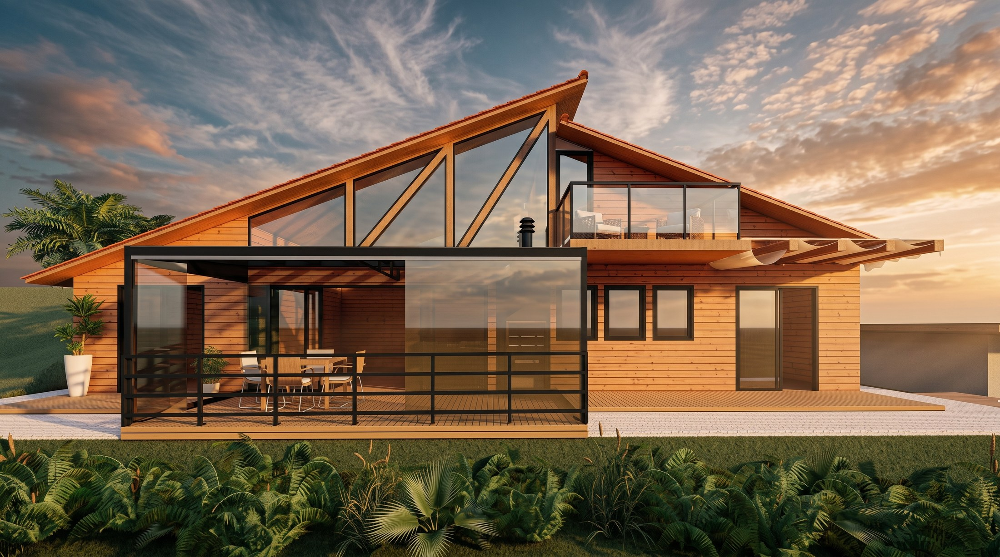
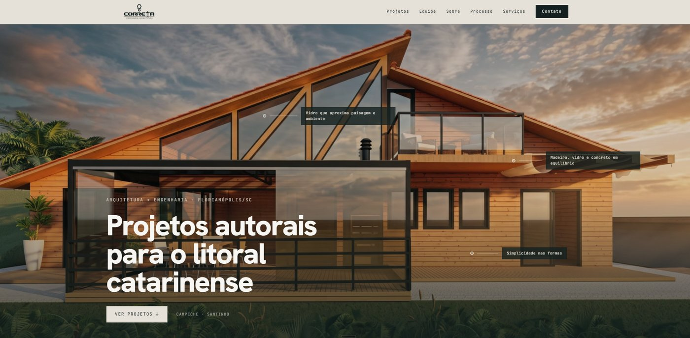
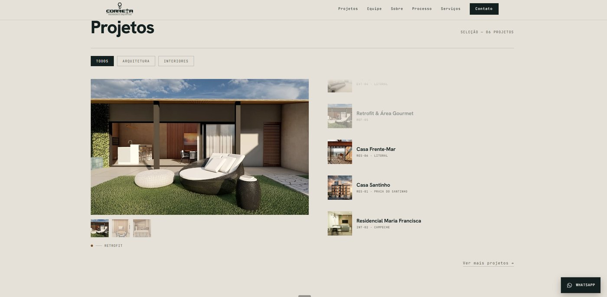
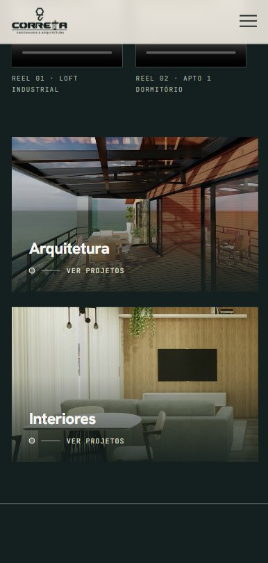
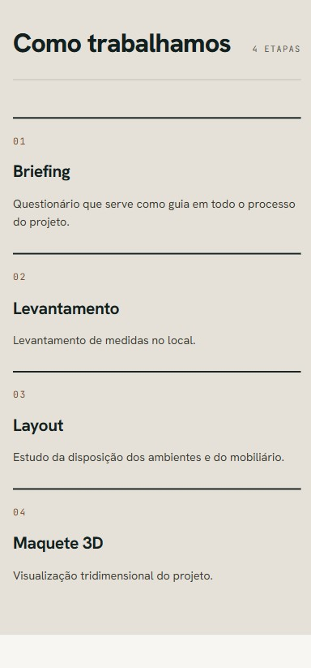
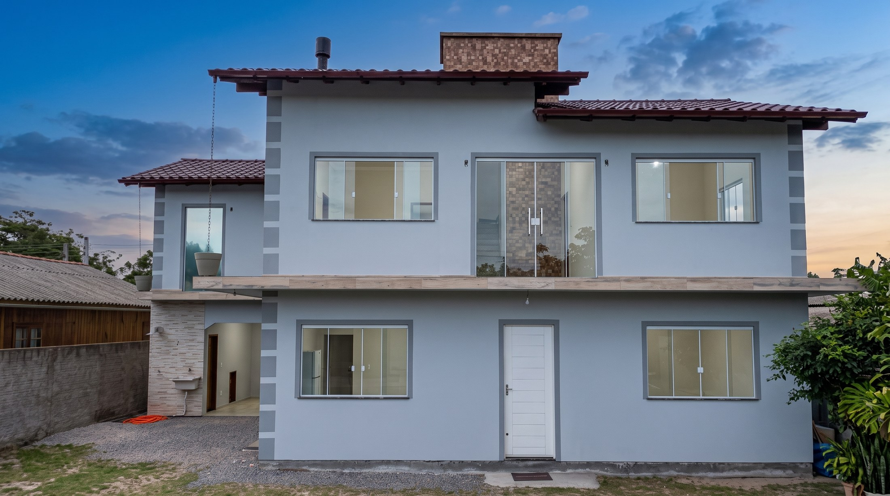
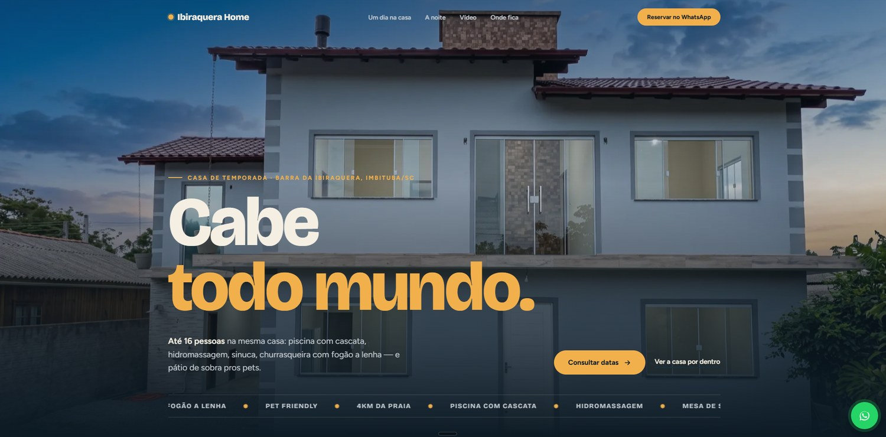
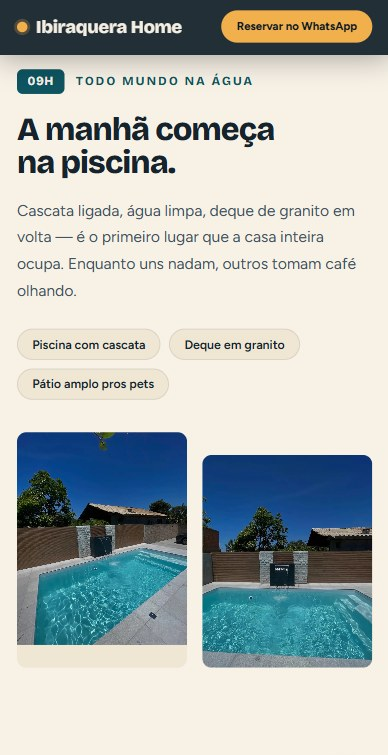
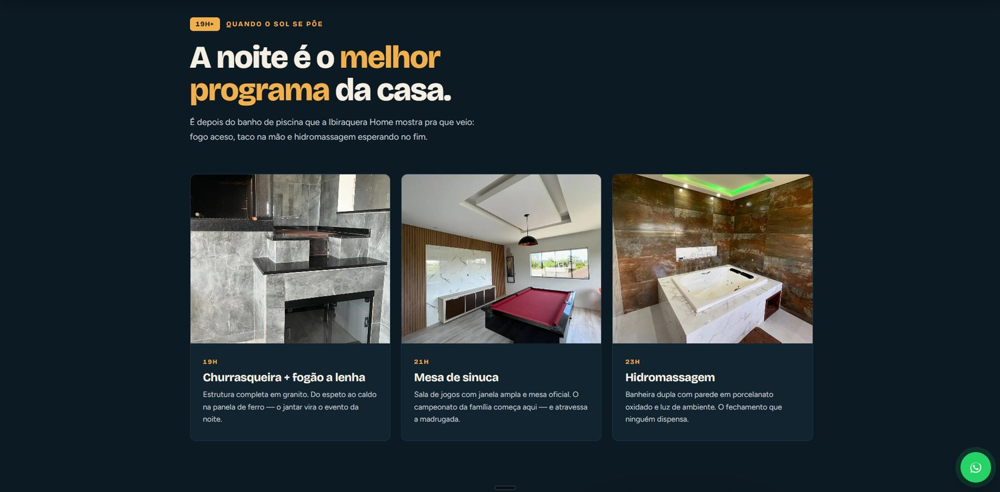
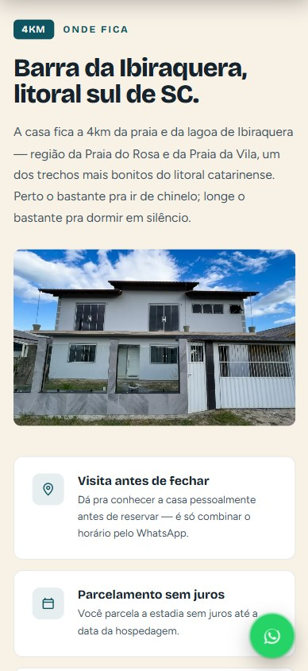

Presença digital para quem projeta, ergue e vende espaço.
O traço vira presença. Cada projeto é tratado como obra, com luz, proporção e silêncio também na tela.
Precisão que se percebe. Estrutura, clareza e confiança técnica, sem ruído.
O imóvel antes da visita. Alto padrão apresentado com o peso que ele tem.

Projetos autorais para o litoral catarinense.
Visitar site ↗Antes do design, veio o estudo de como a Correta já trabalha. O site carrega a marca do escritório, não um estilo pronto da Aliyan.

O hero recebe o render principal em tela cheia, com pequenas marcações flutuantes sobre vidro, madeira e concreto. Quem chega entende o projeto antes de rolar a página.

Na página de projetos, uma imagem grande domina o centro e a lista fica quieta ao lado. Cada projeto pode ser visto por completo antes de qualquer filtro ou categoria.

No celular a navegação muda de grade para categoria. Arquitetura e Interiores viram dois blocos únicos, grandes o bastante pro toque, sem perder a atmosfera escura do desktop.

O site também mostra como a Correta trabalha de verdade: briefing, levantamento, layout e maquete 3D, do jeito que o escritório realmente conduz cada projeto. Quem visita entende o processo antes de fechar contrato.

Até 16 pessoas, a 4km da praia e da lagoa.
Visitar site ↗A casa é contada como um dia inteiro, do amanhecer na piscina até a noite na hidromassagem. Quem visita o site já imagina a própria estadia.

O hero entrega o essencial em poucos segundos: nome da casa, capacidade para 16 pessoas e um convite direto pra reservar. A faixa de comodidades corre por baixo, sempre à vista.

No mobile a casa é narrada por horário. Às 9h é a piscina, com cascata ligada e deque de granito. É a primeira parada do dia, antes de qualquer outra informação.

À noite entra a área de lazer completa: churrasqueira, sinuca e hidromassagem, cada uma com o horário em que costuma ser usada. A narrativa de tempo faz a pessoa se imaginar ali dentro, não só olhar fotos soltas.

A localização fecha o argumento prático: 4km da praia, visita presencial antes de reservar, parcelamento sem juros. A informação objetiva vem por último, depois da experiência já ter sido mostrada.

Todo projeto começa antes da tela, na escuta, no entendimento do que precisa existir.
Depois vem a estrutura: cada decisão de luz, tipo e ritmo com uma razão de ser.
No fim, o que se entrega não é um site. É a presença que o trabalho merece.
Aliyan é o estúdio de Anderson Aelio, um jeito próprio de construir, nascido de quem aprendeu a fazer tudo de outro modo.